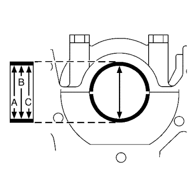

Limpieza y comprobación de cojinetes y cigüeñal
Herramientas especiales
| • | EN-45059 Kit de goniómetro de par de apriete |
| • | GE-49449 Galga de cuadrante |
Si desea informarse sobre herramientas regionales equivalentes, consultar Herramientas especiales .
Procedimiento de limpieza
- Limpie en disolvente los siguientes componentes:
| • | Cojinetes de varillas de unión |
| • | Pasos de aceite de cigüeñal |
| • | Orificios roscados de cigüeñal |
Advertencia: Consulte Advertencia sobre el uso de gafas de seguridad y aire comprimido en la sección Prólogo.
- Seque los componentes siguientes con aire comprimido:
| • | Cojinetes de varillas de unión |
| • | Pasos de aceite de cigüeñal |
| • | Orificios roscados de cigüeñal |
Examen visual
- Realice las siguientes comprobaciones visuales:
| • | Compruebe que el orificio de perno de equilibrador de cigüeñal (1) no tiene dañada la rosca. |
| • | Compruebe que el chavetero del cigüeñal (3) no está dañado. |
| • | Compruebe que las aletas de accionamiento de la bomba de aceite (4) no están dañadas. |
| • | Compruebe que los muñones de bancada del cigüeñal (5) no están dañados. |
| • | Compruebe que los muñones de varilla de unión del cigüeñal (6) no están dañados. |
| • | Compruebe que los pasos de aceite del cigüeñal (7) no están obstruidos. |
| • | Compruebe que las superficies de pared de empuje de cojinete de bancada del cigüeñal (8) no están dañadas. |
| • | Compruebe que los contrapesos del cigüeñal (9) no están dañados. |
| • | Compruebe si está dañado el aro del excitador interior del sensor de posición del cigüeñal (10). |
| • | Compruebe que la superficie de sello de aceite principal trasera del cigüeñal (11) no está dañada. |
| • | Compruebe que la superficie de montaje del disco de inercia del motor del cigüeñal (12) no está dañada. |
| • | Compruebe que el orificio piloto del cigüeñal (13) no está dañado. |
| • | Compruebe que los orificios de perno de disco de inercia del motor del cigüeñal (14) no tienen dañado el roscado. |
- Repare o sustituya el cigüeñal según sea necesario.
Comprobación del cigüeñal y el cojinete
- Compruebe la fatiga indicada por cráteres o cavidades. Unas secciones aplanadas en las mitades del cojinete también indican fatiga.
- Compruebe una excesiva formación de estrías o decoloración en la parte delantera y trasera de los semicojinetes.
- Compruebe que los cojinetes de bancada no presentan suciedad incrustada en el material del cojinete.
- Compruebe si el asiento es incorrecto, lo cual se indica por la presencia de secciones brillantes pulidas.
Comprobación del juego axial del cigüeñal
Nota : Cigüeñal (2) acoplado con sombreretes de cojinete de cigüeñal.
- Monte el comparador GE-49449 (1)
| • | Monte la herramienta de retención en la parte delantera del bloque motor. |
| • | Coloque la espiga palpadora (1) del comprobador contra el cigüeñal y realice el ajuste. |
- Mida el juego longitudinal del cigüeñal.
| • | Mueva el cigüeñal en la dirección longitudinal. |
| • | Juego final permitido del cigüeñal: 0,09–0,35 mm (0,0036–0,0138 pulgs.). |
- Desmonte el comparador GE-49449.
Comprobación de la excentricidad del cigüeñal
Nota: Cigüeñal desmontado.
- Introduzca el cigüeñal en el bloque motor.
- Monte el comparador GE-49449
| • | Acóplelo al soporte del bloque motor. |
| • | Coloque la espiga palpadora del comparador en el muñón del cojinete del cigüeñal y realice el ajuste. |
- Compruebe el juego de giro del cigüeñal.
| • | Haga girar el cigüeñal de modo uniforme. |
| • | Máximo juego de giro permitido: 0,03 mm (0,0012 pulgadas). |
- Desmonte el comparador GE-49449.
Comprobación del juego del cojinete del cigüeñal (con Plastigage)

- Coloque Plastigage adecuado.
Coloque el Plastigage (tira de plástico flexible) alrededor de toda la anchura del muñón del cojinete de biela (flecha).
- Monte la carcasa (1) inferior del cigüeñal.
Precaución:Consulte Precaución con las fijaciones en la sección Prólogo.
- Monte los 10 tornillos de la carcasa inferior del cigüeñal (1) en la secuencia indicada en el gráfico y apriételos en tres pasos:
| 3.1. | Primer paso en orden a 25 N·m (19 lib. pie). |
| 3.2. | Segundo paso en orden a otros 45 grados usando el goniómetro EN-45059. |
| 3.3. | Tercer paso en orden a otros 90 grados usando el goniómetro EN-45059. |
Nota: No gire el cigüeñal.
- Desmonte los 10 tornillos de la carcasa inferior del cigüeñal en una secuencia como la indicada en el gráfico.
- Desmonte la carcasa (1) inferior del cigüeñal.
Nota: Al leer el valor, no confunda los milímetros con las pulgadas de la escala de medición.
- Mida el juego del cojinete del cigüeñal.
| • | Compare la anchura del hilo de plástico aplastado (flecha) con la escala de medición. |
| • | Juego permitido del cojinete del cigüeñal: 0,02-0,04 mm (0,001–0,003 pulgs.). |
Comprobación del juego del cojinete del cigüeñal (con micrómetro de interiores)
Precaución:Consulte Precaución con las fijaciones en la sección Prólogo.
Nota:
| • | Tenga en cuenta el orden de apriete correcto. |
- Monte la carcasa inferior del cigüeñal con los cojinetes del cigüeñal en el bloque del motor.
Precaución:Consulte Precaución con las fijaciones en la sección Prólogo.
- Monte la carcasa (1) inferior del cigüeñal.
- Monte los 10 tornillos de la carcasa inferior del cigüeñal (1) en la secuencia indicada en el gráfico y apriételos en tres pasos:
| 2.1. | Primer paso en orden a 25 N·m (19 lib. pie). |
| 2.2. | Segundo paso en orden a otros 45 grados usando el goniómetro EN-45059. |
| 2.3. | Tercer paso en orden a otros 90 grados usando el goniómetro EN-45059. |

- Monte la espiga palpadora interior y calíbrela con el micrómetro (1).

- Mida el diámetro del cojinete del cigüeñal en 3 puntos.
Mida los puntos I, II y III con el dispositivo de medición interno.
Calcule el diámetro medio del cojinete del cigüeñal.
Fórmula: A+ B+ C /3.

- Mida el diámetro del muñón de cojinete del cigüeñal en 2 puntos.
Mida con el tornillo micrómetro en los puntos I y II.
- Calcule el diámetro medio del muñón de cojinete del cigüeñal.
Fórmula: I + II/2.
- Determine el juego del cojinete del cigüeñal.
Fórmula de cálculo: diámetro medio del cojinete del cigüeñal menos diámetro medio del muñón de cojinete del cigüeñal.
- Comparación teórica - real.
Juego permitido del cojinete del cigüeñal: 0,02-0,04 mm (0,001–0,003 pulgs.).
| © Copyright Chevrolet. All rights reserved |